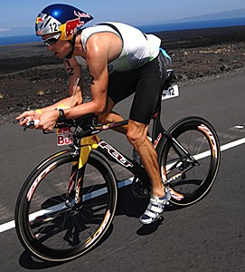
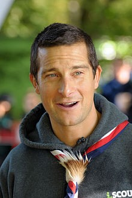

Target Audience
Who: Athletes, Organization/Association/Group who loves outdoor activities
Age: 18 to 100
Personas
Tim DeBoom
Occupation: Professional Triathlete
Demographics and Education: 55 years old.
Graduated with Bachelor of Science degrees in exercise physiology and anatomy.
Goals and motivation for using the site: The site can help them to plan their future activity
with
his family and can be used to his coaching.
Social: Very active individual, loves outdoor activities with his wife and daughter

Edward Michael "Bear" Grylls
Occupation:Adventurer. Author, Motivational Speaker, Television Presenter
Demographics and Education: 46 years old.
Graduated in Elton College
Goals and motivation for using the site: Since he was a adventurer and television presenter
he needs to know the weather and he can use Sunnys to advertise in his show.
his family and can be used to his coaching.
Social: Loves outdoor activities, He wants to challenge himself, Love reading books.

Scenarios
• What will be the weather today? I want to train!
• Is it windy or not?
• Were planning to travel in Europe, what is the current weather there?
• Can you please check the whole week weather forecast?
• Is it safe to take a flight now/boat ride?